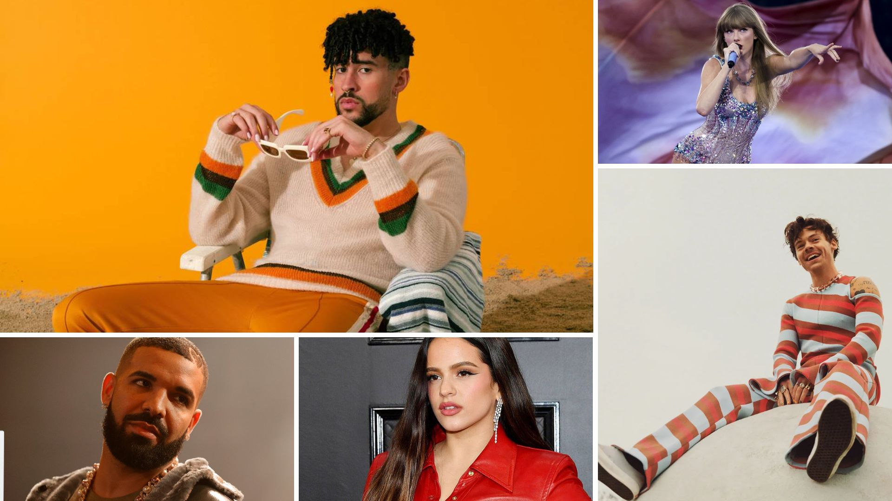

Top más escuchados del 2022
La música animada de 2022 se caracterizó por la fusión de géneros, la globalización de sonidos, colaboraciones inesperadas y el auge de canciones virales que reflejaron una energía renovada tras la pandemia.

Top 5 Cantantes
Bad Bunny
Harry Styles
Taylor Swift
Drake
Rosalía
Top Canciones 2022
- 1. "As It Was" Harry Styles
- 2. "Me Porto Bonito" Bad Bunny & Chencho Corleone
- 3. "Tití Me Preguntó" Bad Bunny
- 4. "Heat Waves" Glass Animals
- 5. "Quevedo: Bzrp Music Sessions, Vol. 52" Bizarrap & Quevedo